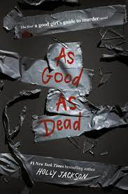

my current read(s)
I am currently in the middle of re-reading A Court of Thorns and Roses. This is one of my all time favorite series and my re-read is going good so far.

I have just started reading the third and final book in the A Good Girls Guide to Murder series. This series has been very good so far and I am excited to finish it.
2023 reading stats
goodreads reading goal: 25/30 books read
books bought: 12
series finished: 4
five star ratings: 18